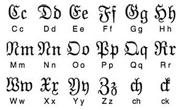

Fraktur
and why it got it's
negative connotation

Why Fraktur began being less used
- Italians rediscovered Roman scripts, leading to the creation of Times New Roman.
- As Germany united and engaged internationally, Fraktur became difficult for others to read.
- Hitler himself opposed it, believing it kept Germany stuck in the past.
Fraktur was once Germanys major dialect but because of historical events it fell out of style which is now causing many historical German artifacts increasinlg harder to read